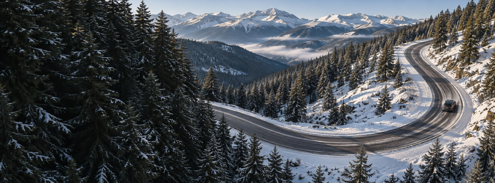

Patrocini Continental · Una estacióImatge conceptual
L’estació en xifres.
El detall per quinzena
Territori · La Molina
El relleu.
El bosc i les carenes envolten la base del Cap de Comella. Gira el model per recórrer un retall de sis quilòmetres de costat.
1.221–2.481 mCotes del retall
100 mEquidistància de les corbes
Arrossega per girar i inclinar el relleu.
Mapzen Terrain Tiles · Copernicus EU-DEM, Unió Europea · Fonts globals USGS i NOAA. Corbes cada 100 m. Escala vertical ×1,7.